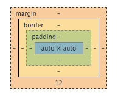

Writing Code #2: A Dive Into The Chamber of CSS Concepts November 30, 2015
In your journey into web development, you will find yourself diving into the chambers of CSS. You might find yourself lost, but don't be afraid! It just takes practice to navigate CSS. Here are a few pointers:
What is the difference between margin, border, and padding?
Take a look at this illustration of the CSS box model to have a better understanding of what each area represents:

Padding refers to an area of space around the content that extends out to its border. You could think of padding as space within the box that pushes or extends the content internally.
Border refers to the edge of the HTML element, extended from the padding area. The border box can be used to create an actual visual border that is rendered on the screen according to whatever color or style you specify for it.
Margin refers to the outside spacing of the current HTML element. It extends out from the border area of the element and is used to space the element from its neighboring HTML elements.
What are the best practices associated with using classes vs. ids?
When approaching classes and ids in CSS, you should be know the differences between their uses. Classes can be re-used on multiple occasions on the the same page on different elements. IDs on the otherhand, can only be used once.
An interesting feature of IDs is that they can be used as navigational tools to the exact location of the element on the page for visitors by simply adding ID name in the form of #name at the end of an URL.
What are the differences between relative, absolute, fixed, and static positioning?
Absolute - Absolute positioning refers to making an HTML element assume an "absolute" position - meaning that the element will literally be positioned whereever you format and position it to be using additional CSS, regardless of other elements around it. You would want absolute positioning if you wanted to ensure that a specific HTML element went to a specific location on the page, no matter what other elements might be in the way. Another property of the absolute positioning value is that it takes the HTML element out of the "flow" of the page completely. This means that this element will be taken out of the normal positioning structure of the page to FORCE this specific element's location. This also means that other elements will not try to stack or move around the element - this can cause overlap if you are not careful if absolute positioning. It can be very helpful for special elements on a page that need to be in specific locations.
Fixed - Fixed positioning refers to making an HTML element assume a "fixed" position - one that will be "fixed" on your screen and stay in its current location on your screen, even if you scroll in any direction. Fixed uses sticks to a "viewpoint" (the position on the page on your screen when you first render it) and keeps the element at that specific viewpoint wheverever you scroll the page to.
Static - Static positioning is the default value of all HTML elements. When static positioning is used, it displays HTML elements within the normal flow of the page. One interesting thing to note is that when you use other CSS formatting values to position the element while static, it will do so in relation to the page itself. Relative positioning (explained below) changes this attribute by making elements become relative to their current position in the flow of the page (rather than the margins of the full page)
Relative - Relative positioning causes an HTML element to become "relative" to its own positioning. Instead of static positioning, which makes an element position itself in relation to the edges of the page itself, it will position itself relative to its position in the flow of the page. This makes relative positioning one of the most versatile positioning values because it allows you to cascade neighboring elements the way that you would want.
What does it mean to display inline vs using inline block?
Inline and inline block are two different methods of displaying HTML elements. With inline, you can imagine that elements with this display property will be displayed within the same line of space - meaning they can have elements to their left and right, but they will all be aligned along the same imaginary horizontal line.
Inline block allows elements with different types of verticle margins (top and bottom margins) to be respected, while also allowing elements to sit to their left and right. This means that while inline regularly would force elements to sit in the same imaginary horizontal line, with inline block, if an element has different top or bottom margins than its neighboring elements, they will be displayed. This can lead to interesting cascading arrangements that respect the individual formatting and sizes of each element using this display property.